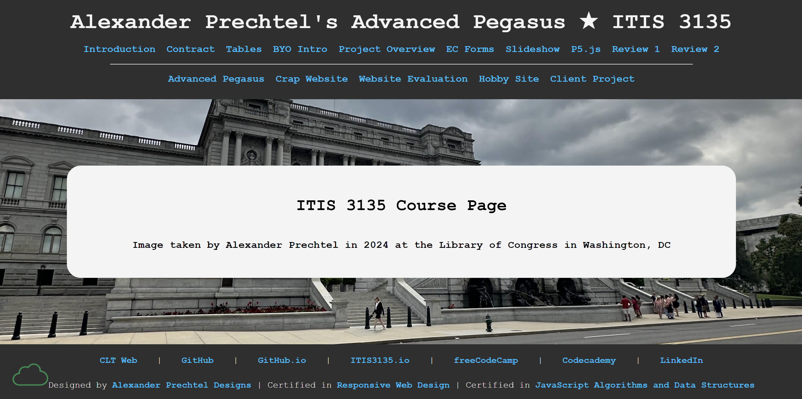

Review 2
Name: Alex Prechtel

Review 2 webpage
Evaluation
- Submission leads right to the page to be reviewed(primary page)
- Capital letters used for lots of images, but good with other files/directories
-
- Good contrast of dark gray and light blue color, easy to read
- Has site colors and fonts using the standard .css file
- CRAP
- good amount of contrast for easy reading
- Using repetition to keep the site connected
- Generally well organized, everything is easy to recognize
- Good proximity
- Page has within it:
- header
- main
- footer
- doesn't have nav for main menu between header and main
- Header has site/brander:
- Homework Page (o)
- Branded Page (x)
- DO NOT INCLUDE THE PAGE NAME IN THE HEADER (o)
- Understand the difference between head, header, and heading(o)
- Main starts with name of page as an h2 and does not include name of site/brand(o)
- The page had brand tagline "Alexander Prechtel Designs" at the bottom of the page.
- Page has footer with menu for user's pages, and validation link is no longer need in 2025 Spring
- Page has specific requirements for this assignment.